🌿 Natureza
Explore cachoeiras, trilhas leves e paisagens naturais em Passa Quatro.
Floresta Nacional de Passa Quatro - Pinho
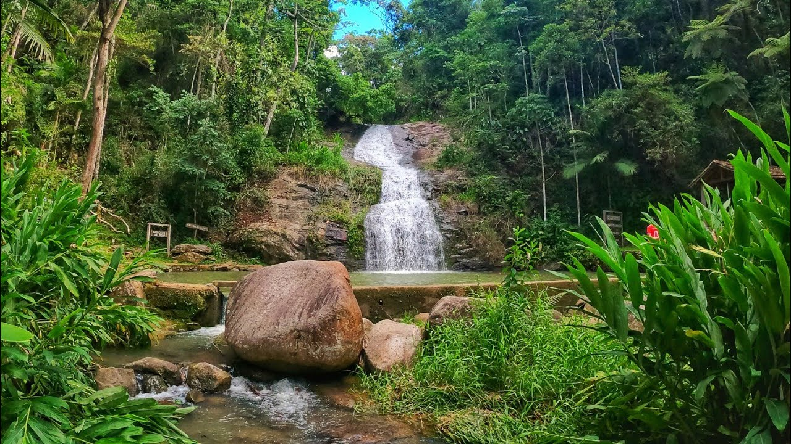
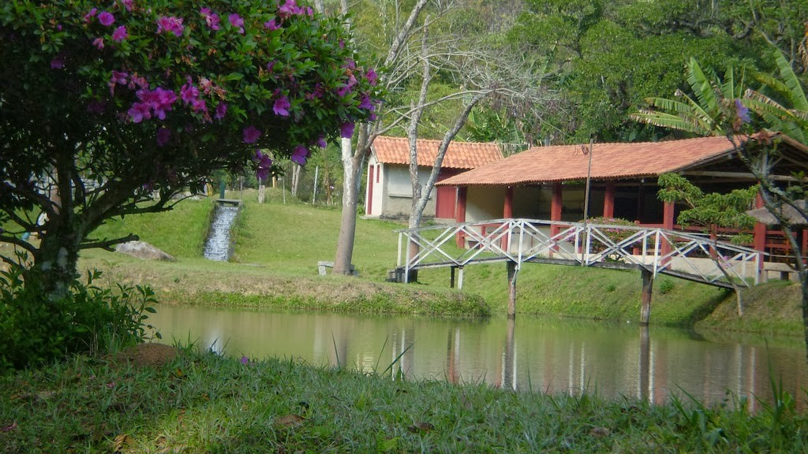
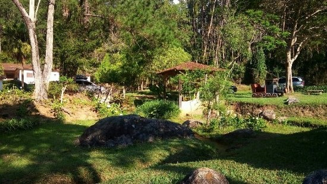
A FLONA de Passa Quatro é um dos lugares mais procurados da cidade para quem gosta de natureza e tranquilidade. O local possui trilhas leves, áreas para descanso, lagos e a famosa Cachoeira de Iporã, ideal para banho e lazer. Cercada pela natureza da Serra da Mantiqueira, é uma ótima opção para passeios em família e momentos ao ar livre, e é recomendado levar seus próprios lanches e água.
📍 Localização: Estrada do Tabuão, s/n - Tabuão, Passa Quatro - MG, 37460-000
🕒 Funcionamento: De terça a domingo 08:00 - 16:00
🚗 Referência: Apenas 2 km do trevo da cidade
Lugar muito bonito e tranquilo.
Ótimo passeio para família.
Cachoeira da Gomeira
A Cachoeira da Gomeira é um dos destinos naturais mais conhecidos de Passa Quatro, ideal para quem busca contato com a natureza e momentos de lazer. O local possui águas refrescantes, área verde ao redor e um ambiente tranquilo, muito procurado para banho e passeios ao ar livre.
📍 Localização: Pinheirinhos, Passa Quatro - MG, 37460-000
🕒 Funcionamento: De segunda a domingo 08:00 - 16:30
🚗 Referência: Localizada na região dos Pinheirinhos, com acesso pela estrada rural próxima à zona turística da cidade.
Lugar muito bonito e tranquilo.
Ótimo passeio para família.
Cachoeira do Andorinhão
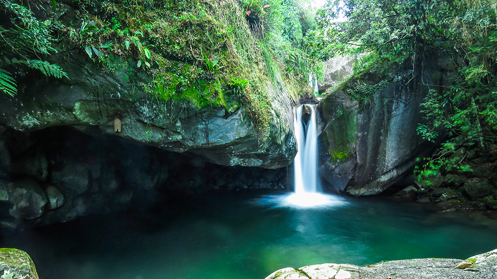
.jpg)
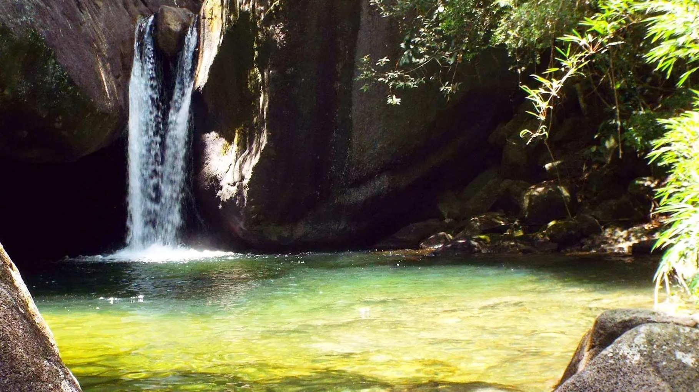
A Cachoeira do Andorinhão é uma ótima opção para quem procura aventura e contato com a natureza em Passa Quatro. Cercada pela vegetação da Serra da Mantiqueira, o local se destaca pelas águas cristalinas e pelo ambiente tranquilo, sendo muito procurado para banho, trilhas e passeios ao ar livre.
📍 Localização: Paiolinho, Passa Quatro - State of Minas Gerais, 37460-000, Brazil
🕒 Funcionamento: De segunda a sábado 08:00 - 16:00 Domingo 09:00 - 17:00
🚗 Referência: Localizada na região do Paiolinho, com acesso por estrada rural próxima às áreas de trilhas e cachoeiras da cidade.
É a cachoeira mais bonita daqui, recomendo a experiencia.
Ja fui muitas vezes, recomendo.
⛰️ Aventura
Explore trilhas, montanhas e aventuras ao ar livre em Passa Quatro.
Pico do Itaguaré
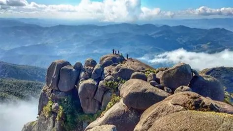
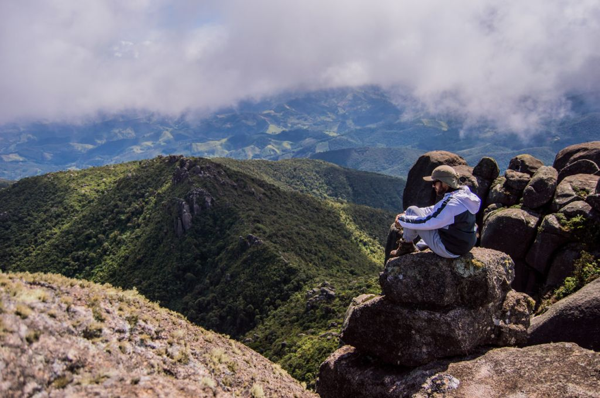
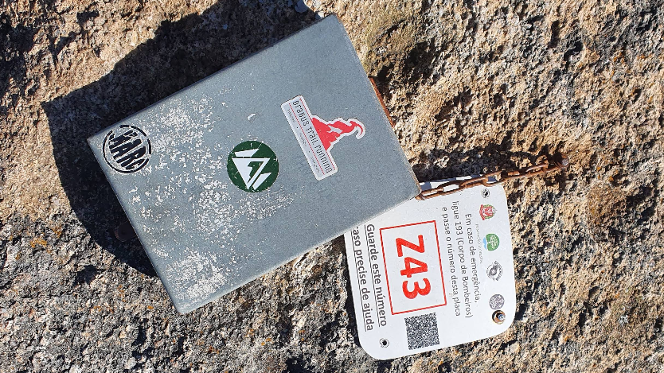
O Pico do Itaguaré é um dos destinos mais procurados por amantes de aventura e montanhismo na Serra da Mantiqueira. Com trilhas desafiadoras, belas paisagens naturais e uma vista incrível no topo, o local proporciona uma experiência única de contato com a natureza. Durante a subida, os visitantes também podem registrar sua passagem no tradicional caderno do cume, deixado no topo do pico, onde aventureiros escrevem mensagens, datas e relatos da conquista.
📍 Localização: Sertão dos Martins P4, Passa Quatro - MG, 37460-000, Brazil
📞 Contato: (35)99922-6074
🚗 Referência: Acesso por estrada de terra a cerca de 13 km da MG-158.
Trilha bem sinalizada, com local tranquilo para estacionar o carro, lugar limpo.
Tem vários espaços para camping (selvagem) e água nas proximidades. O camping mais proximo ao cume venta muito e tem muita umidade. A dica é ficar no camping mais baixo
Túnel da Mantiqueira
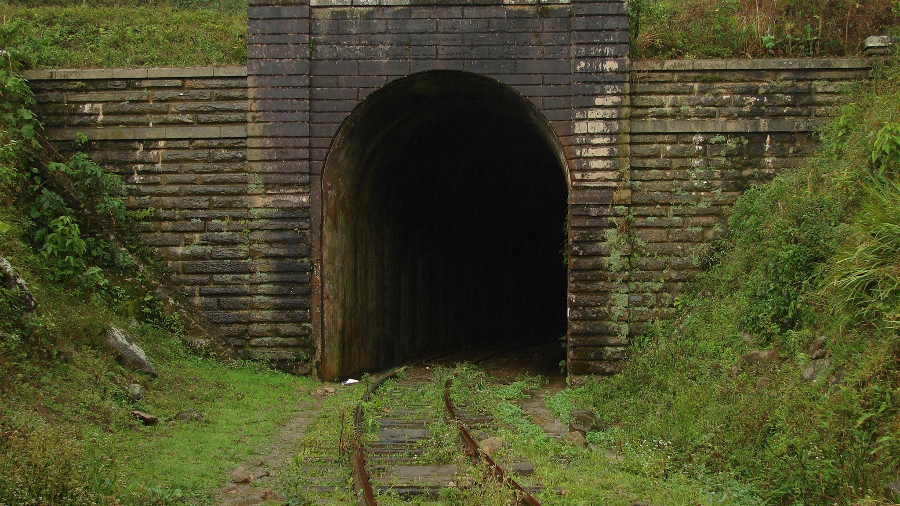
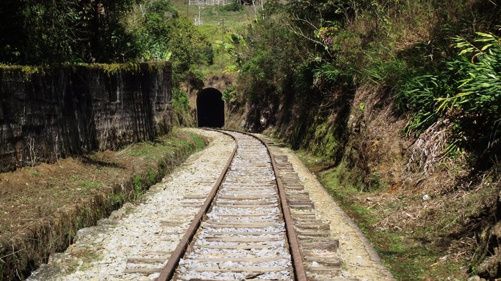
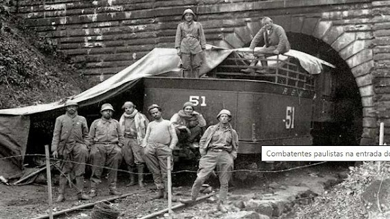
O Túnel da Mantiqueira é um dos pontos históricos e turísticos mais famosos de Passa Quatro. Localizado na divisa entre Minas Gerais e São Paulo, o túnel ferroviário possui cerca de 1 km de extensão e atravessa a Serra da Mantiqueira, proporcionando uma experiência única de aventura, história e contato com a natureza. O local também ficou marcado pelas batalhas da Revolução Constitucionalista de 1932 e atualmente é um dos principais atrativos do passeio de maria-fumaça da cidade.
📍 Localização: Pinheirinhos, Passa Quatro - MG, 37460-000
🕒 Funcionamento: Aberto 24 horas
🚗 Referência: O acesso ao Túnel da Mantiqueira acontece pela região da Estação Coronel Fulgêncio, na zona rural de Passa Quatro, sendo possível chegar através do passeio do Trem da Serra da Mantiqueira ou por trilhas e estradas da serra.
Recomendo deixar o carro no restaurante antes da estrada que desce para o túnel na parte ainda asfaltada dela. Não vale a pena ir até o fim de carro
Lugar bacana, histórico,vale a pena conhecer. Levar uma lanterna para atravessar o túnel,melhor que a luz do celular.
Pico do Assovio
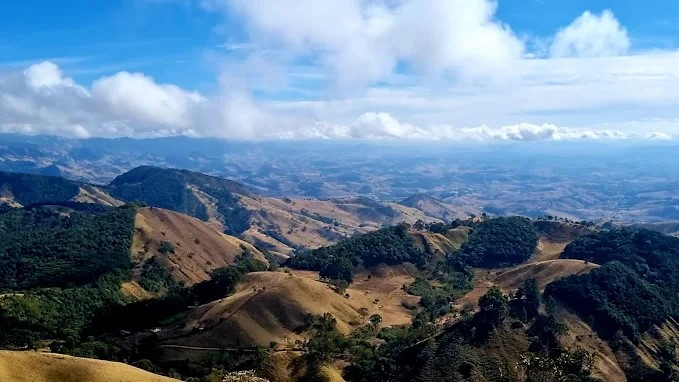
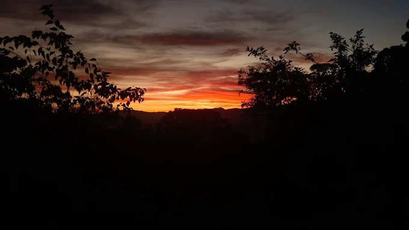
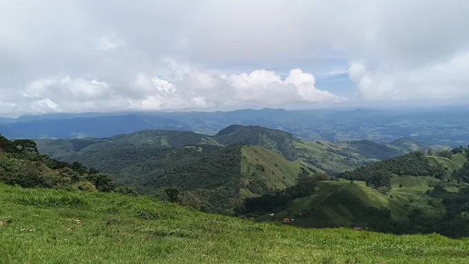
O Pico do Assovio é um dos mirantes naturais mais conhecidos de Passa Quatro, ideal para quem busca aventura e contato com a natureza. A trilha possui trechos de subida moderada e recompensa os visitantes com uma vista panorâmica das montanhas e vales da Serra da Mantiqueira, sendo um ótimo local para contemplar o nascer e o pôr do sol.
📍 Localização: Zona rural, Passa Quatro - MG, 37460-000
📞 Contato: (35)99850-6637
🚗 Referência: O acesso ao Pico do Assovio acontece pela zona rural de Passa Quatro, seguindo em direção ao bairro Pinheirinhos e regiões de serra. O trajeto é conhecido por estradas de terra e áreas de mata, sendo recomendado o acompanhamento de guia local para visitantes iniciantes.
Lugar lindo de se contemplar e apreciar a natureza. Trilha entre o eucaliptal e informe mas de fácil acesso.
Lugar muito bom para treinar, e para acampar também!
👨👩👧 Família
Descubra lugares tranquilos e divertidos para curtir em família.
Maria Fumaça
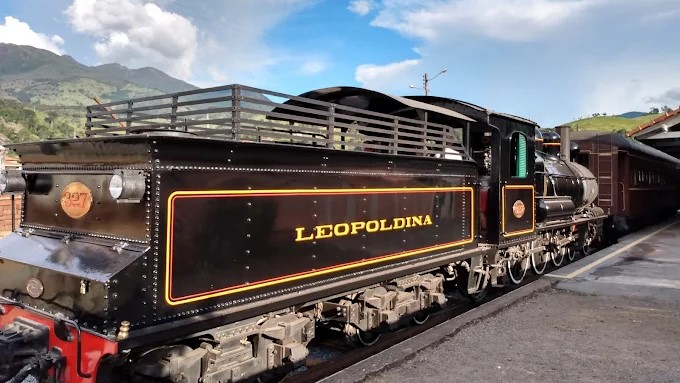
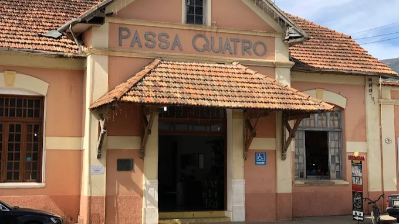
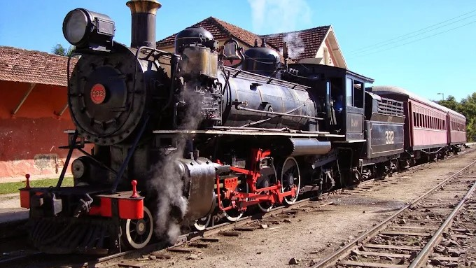
O passeio de Maria-Fumaça é uma das atrações mais tradicionais de Passa Quatro, proporcionando uma viagem histórica pela Serra da Mantiqueira em uma locomotiva a vapor. Durante o trajeto, os visitantes podem apreciar belas paisagens naturais, túneis ferroviários e conhecer mais sobre a história da antiga ferrovia da região, tornando o passeio uma experiência especial para todas as idades.
📍 Localização: Rua Arlindo Luis 270 - Centro, Passa Quatro - MG, 37460-970
📞 Contato: (35) 3371-2167
🚗 Referência: O passeio de Maria-Fumaça parte da Estação Ferroviária de Passa Quatro, localizada no centro da cidade, com trajeto em direção à Serra da Mantiqueira e ao Túnel da Mantiqueira.
Bom passeio em família, experiência muito válida para quem gosta de resgatar um pouco da história do Brasil, uma viagem no tempo para entender como já foi a vida a moda antiga
O passeio é bem gostoso e tranquilo de fazer. No caminho há várias paisagens lindas para tirar fotos.
Jardineira
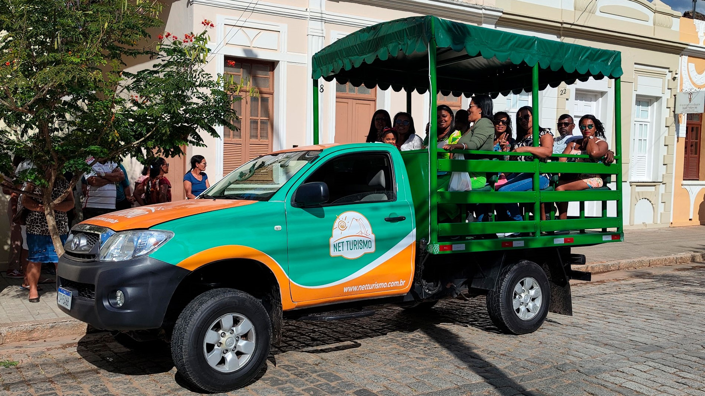
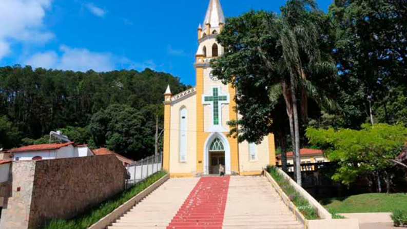
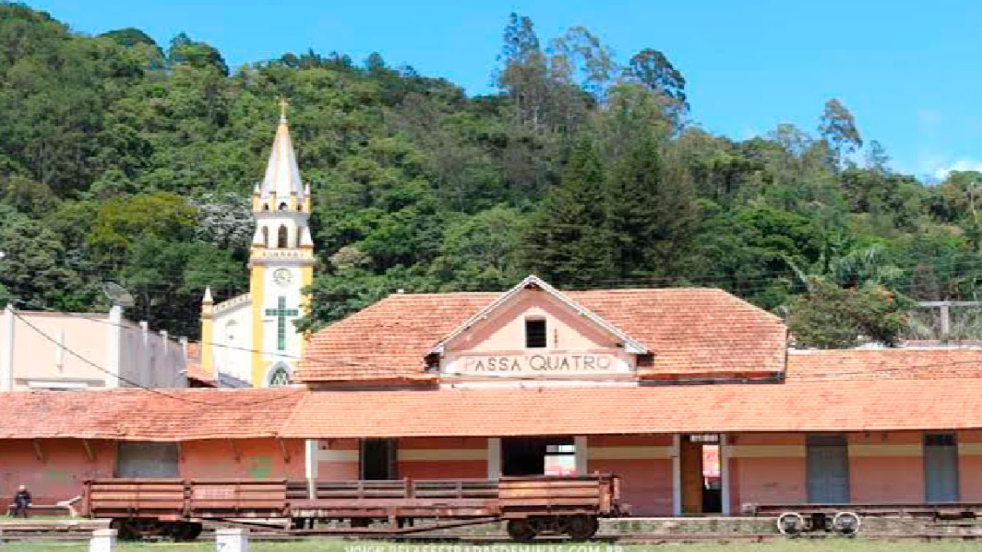
O passeio de jardineira é uma opção divertida e tradicional para conhecer os principais pontos turísticos e paisagens de Passa Quatro. Realizado em um veículo adaptado em estilo antigo, o passeio proporciona uma experiência agradável para toda a família, passando por áreas históricas, mirantes e regiões naturais da cidade.
📍 Reserve: Net Turismo
📞 Contato:(35) 99857-4034
🚗 Referência: Os passeios de jardineira costumam partir da região central de Passa Quatro, próximo à praça principal e à estação ferroviária da cidade.
Passeio muito divertido e ótimo para conhecer vários pontos da cidade em família!
A jardineira deixa o passeio ainda mais especial, principalmente pelas paisagens durante o trajeto..
🍴 Gastronomia
Conheça lugares aconchegantes e deliciosos para aproveitar a culinária local.
Restaurante Lá Minas
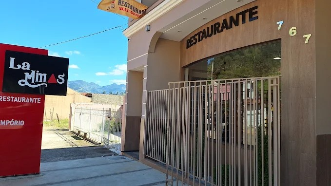
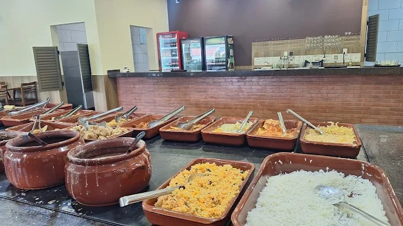
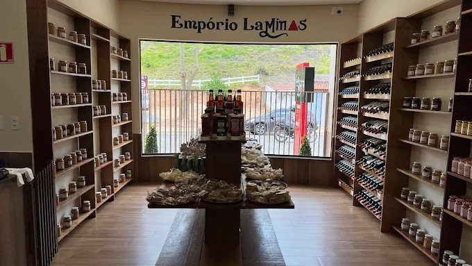
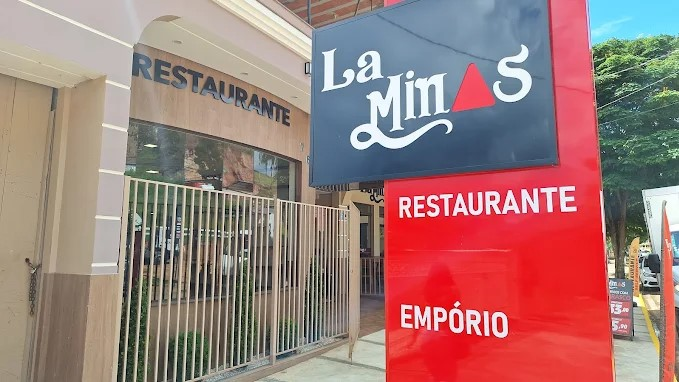
O Lá Minas é um restaurante aconchegante de Passa Quatro que se destaca pela culinária mineira, ambiente agradável e pratos preparados com sabores tradicionais da região. O local é uma ótima opção para famílias e visitantes que desejam aproveitar uma experiência gastronômica típica da Serra da Mantiqueira.
📍 Localização: R. José Inácio Siqueira, 767 - São miguel, Passa Quatro - MG, 37460-000
📞 Contato: (35) 99767-0472
🕒 Funcionamento: Segunda a domingo 11:00 - 15:00
🚗 Referência: O Lá Minas está localizado próximo ao trevo de entrada da cidade, nas proximidades do Colégio São Miguel, com fácil acesso para quem chega em Passa Quatro.
Ótimo restaurante em Passa Quatro/ MG Serviço de buffet, com várias opções de saladas e pratos quentes.
Ambiente bem organizado, arejado. Buffet maravilhoso. Comida simples, mas bem gostosa.
Restaurante Doce Sabor
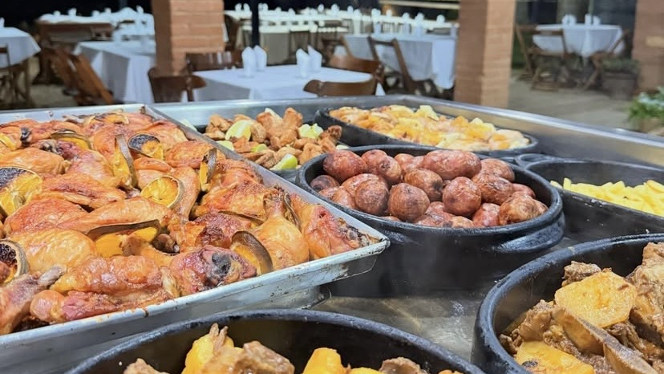
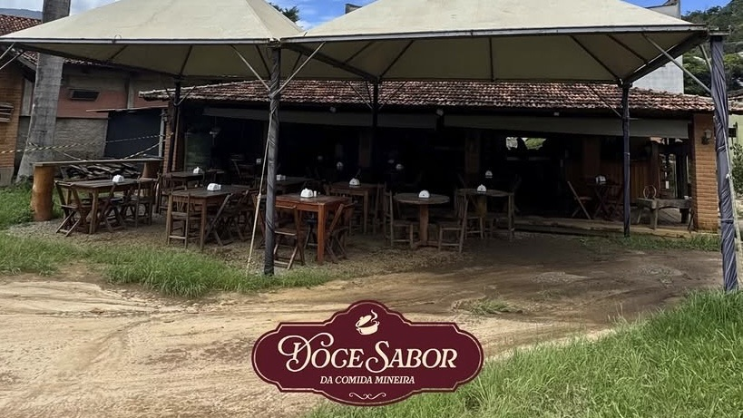
O Restaurante Doce Sabor é conhecido pela comida mineira caseira, servida em um ambiente simples e acolhedor. O restaurante é uma ótima opção para quem deseja aproveitar refeições tradicionais e saborosas durante a visita a Passa Quatro.
📍 Localização: R. Francisco Saule, 34 - Passa Quatro, MG, 37460-000
📞 Contato: (35) 997642636
🕒 Funcionamento: Segunda a domingo 11:00 - 14:00
🚗 Referência: O Restaurante Doce Sabor fica subindo em direção ao Banco do Brasil, ao lado do Biluca, em uma região movimentada e de fácil acesso no centro de Passa Quatro.
Fomos acolhidas com a máxima hospitalidade mineira, fora do horário de almoço e saboreamos comida caseira muito boa. De sobremesa, um pudim maravilhoso!
Funcionarios atenciosos, comida ótima, local aconchegante, estacionamento no local.
CHRIS Cafés Especiais
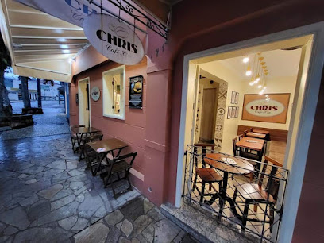
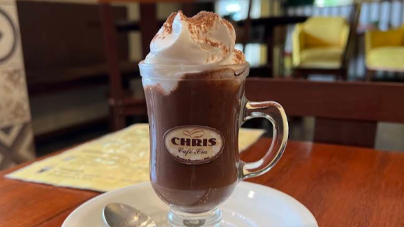
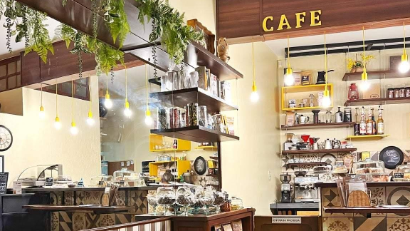
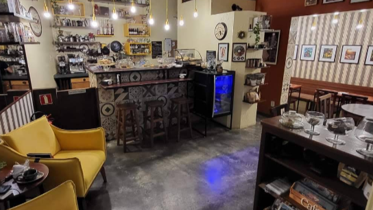
O Chris Cafés Especiais é um espaço aconchegante em Passa Quatro dedicado aos amantes de café. O local se destaca pelos cafés especiais, ambiente agradável e opções perfeitas para quem deseja relaxar e aproveitar sabores diferenciados da região da Serra da Mantiqueira.
📍 Localização: Rua Ângelo d'Alessandro 165, 171 - Centro, Passa Quatro - MG, 37460-000
📞 Contato: (35) 99806-7578
🕒 Funcionamento: Segunda a sábado 14:00 - 19:30
🚗 Referência: O Chris Cafés Especiais fica próximo à Praça dos Leões, em uma região tranquila e de fácil acesso no centro de Passa Quatro.
Lugar fofo!!! Além de lindo, o atendimento e os saboress são sensacionais!!!
Lugar aconchegante e atendimento ótimo! Tomamos um café especial moído na hora.
Japa's Lanche
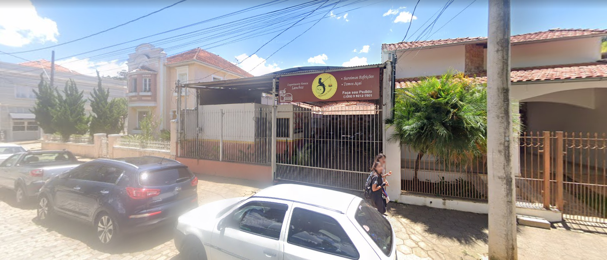


Japas Lanches (Japa’s Lanche) é uma lanchonete tradicional de Passa Quatro-MG, conhecida por seus lanches rápidos e bem servidos, como hambúrgueres, bolo salgado e porções variadas. É um ponto bastante procurado por quem busca um lanche prático no dia a dia, com atendimento simples e ambiente de lanchonete de bairro, ideal para refeições rápidas e encontros informais.
📍 Localização: R. Arlíndo Luz, 225 - Passa Quatro, MG, 37460-000
📞 Contato: (35) 99212-7501
🕒 Funcionamento: Abre ás 18:00
🚗 Referência: Fica em frente ao calçadão central de Passa Quatro – MG, em uma região bem movimentada e de fácil acesso, ideal para quem está passeando pelo centro da cidade.
Comida bem preparada com sabor muito bom e tempero também. Entregas rápidas e atendimento excelente! Recomendo a todos!
Posso dizer que é o melhor lanche que tem, e maionese que nao tem igual!!.